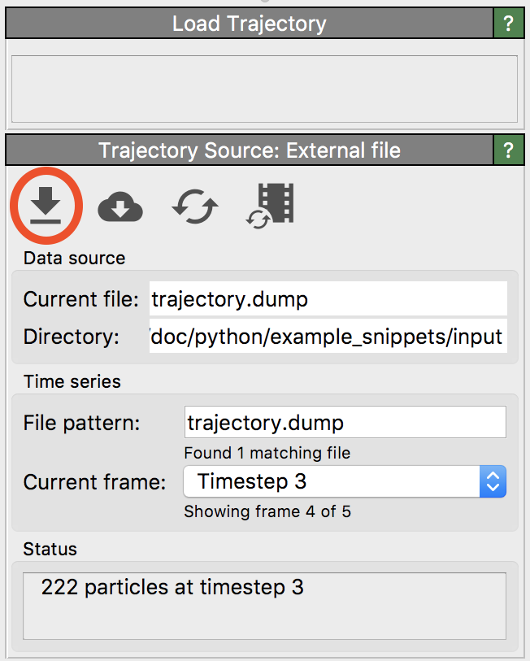
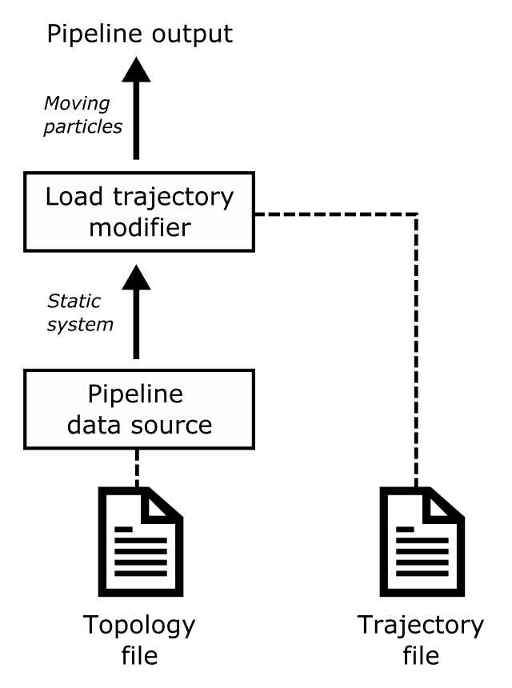
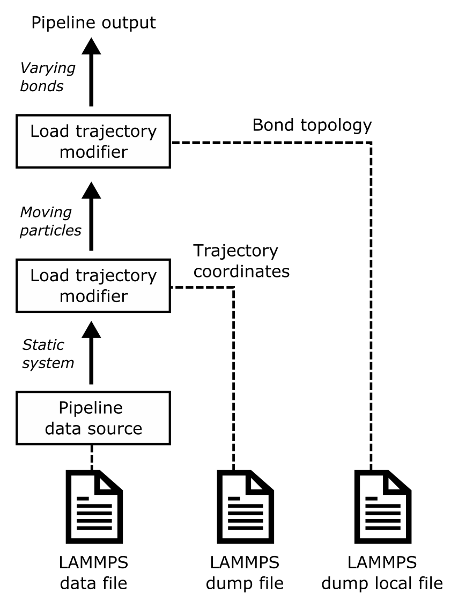

Load trajectory
{kind=link}
This modifier loads atomic trajectories and other time-dependent data from a separate trajectory file and merges them with static topology data (e.g. atom type and bond connectivity information) loaded from the primary data file.
Some molecular dynamics codes use or write separate topology and trajectory files. The topology file typically serves as starting point of the MD simulation and contains the initial atomic positions and the definitions of static structures like the atom types, bonds, etc., which do not change throughout the simulation. The trajectories of the particles computed by the MD code are then written to an output file, which stores just the time-dependent coordinates and sometimes other varying information such as the atomic energies.
LAMMPS is a simulation code that employs this topology-trajectory file philosophy. LAMMPS uses the data file format for input files, which define the atom types and bonds in the simulation, whereas the dump file format serves as output format storing the computed atom trajectories and other time-varying information.
{kind=link}
To load such a pair of topology and trajectory files in OVITO, first open the topology file using the regular menu function. Then insert the Load trajectory modifier into the data pipeline and use the button highlighted in this screenshot to also load the corresponding trajectory file. Make sure you perform the last step in the user interface panel of the selected Load trajectory modifier and not in the original External file panel, which looks very similar and manages the initial topology file.
After loading the trajectory file in the Load trajectory panel, the modifier will subsequently replace the initial particle positions with the time-dependent positions read from the trajectory file. The same is done for the simulation cell geometry as well as any other auxiliary particle properties found in the trajectory file. Furthermore, you see the timeline of OVITO now display the animation frames found in the trajectory file.
Particle ordering
The modifier needs to assign the coordinates read from in the trajectory file to the corresponding particles from
the topology dataset. In order to do this mapping correctly, the modifier uses the unique identifiers of particles (Particle Identifier property)
if available. Otherwise, the modifier simply assumes that the storage order of particles in the topology and in the trajectory
file is the same.
Varying bond connectivity
The LAMMPS code supports reactive molecular dynamics simulations, in which the bond topology dynamically changes during the course of the simulation as bonds break or newly form. The changing bond connectivity in such simulations can be dumped to an output file using the dump local command of LAMMPS in combination with the compute property/local command, see the example below. In simulations using the ReaxFF potential, the fix reaxff/bonds command may be used to write the bonds list (including bond orders) to a text-based output file in regular time intervals.
OVITO’s Load trajectory modifier can read the varying bond topology from dump local or reaxff/bonds files and merge it with the molecular dataset. The loaded bonds list will replace any static connectivity that may have already been present in the initial LAMMPS data file. Typically, you will use two instances of the Load trajectory modifier in the same pipeline to load the atomic trajectories as well as the time-varying bond information from a reactive MD simulation:
{kind=link}
Caution
Make sure that you dump the atomic trajectories and the bonds information at the exact same MD timesteps when running an MD simulation. OVITO does not use LAMMPS timesteps as a common time basis. It simply assumes that the atomic trajectory file and the bond topology file both contain snapshots taken at exact same times, and each Load Trajectory modifier maps them sequentially to the program’s animation timeline without checking the consistency of the timestep information.
LAMMPS is able to output the changing bond topology in regular time intervals and also additional per-bond quantities such as the bond lengths, bond forces or bond energies. Consider, for example, the following LAMMPS commands, which dump the current bonds list to an output file in regular timestep intervals:
compute 1 all property/local btype batom1 batom2
compute 2 all bond/local dist engpot
dump 1 all local 100 bonds.dump index c_1[*] c_2[*]
The dump local command generates a file named bonds.dump with six data columns:
ITEM: ENTRIES index c_1[1] c_1[2] c_1[3] c_2[1] c_2[2]
1 10 24 33 1.02482 0.158356
2 10 24 34 1.01407 0.0298494
3 7 21 22 1.53167 0.000836934
...
When importing the file into OVITO using the Load trajectory modifier, you need to map these data columns to the correct bond properties so that the program can interpret the values in the LAMMPS dump file correctly. The following table shows how that mapping should look like:
Column |
LAMMPS name |
File column identifier |
OVITO bond property |
|---|---|---|---|
1 |
index |
index |
(ignore) |
2 |
btype |
c_1[1] |
|
3 |
batom1 |
c_1[2] |
|
4 |
batom2 |
c_1[3] |
|
5 |
dist |
c_2[1] |
|
6 |
engpot |
c_2[2] |
|
In this example, the third and the fourth file column were mapped to the Particle Identifiers bond property,
which signals OVITO that the dump local file contains a complete new set of bonds, replacing the original (static)
bond topology previously loaded from the LAMMPS data file.
In contrast, if a dump local file doesn’t contain pairs of particle IDs, then OVITO assumes that
the file stores auxiliary per-bond values and simply adds them to the existing bonds as new properties. In this case,
the number of bond records in the dump local file must exactly match the number of already existing bonds in the model.
Files written by the fix reaxff/bonds command have a different, fully specified format. OVITO can automatically map the information from such ReaxFF files to the right bond and particle properties, see ReaxFF file reader documentation.
See also